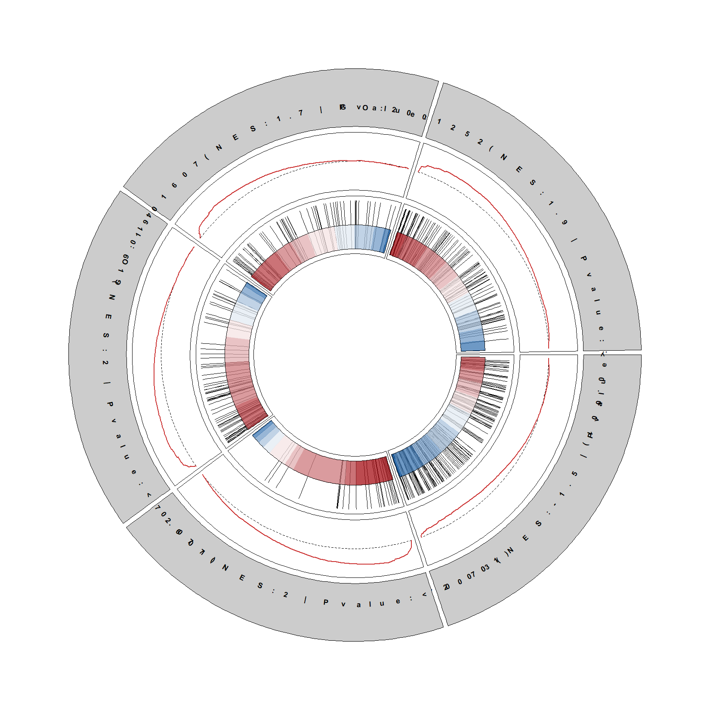
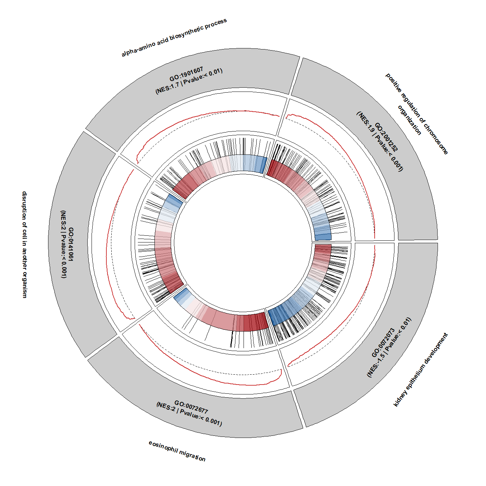
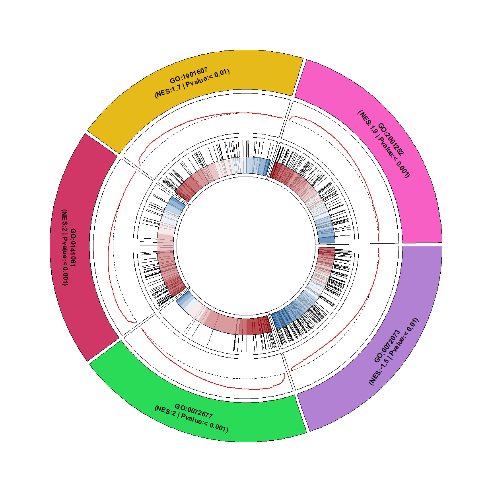
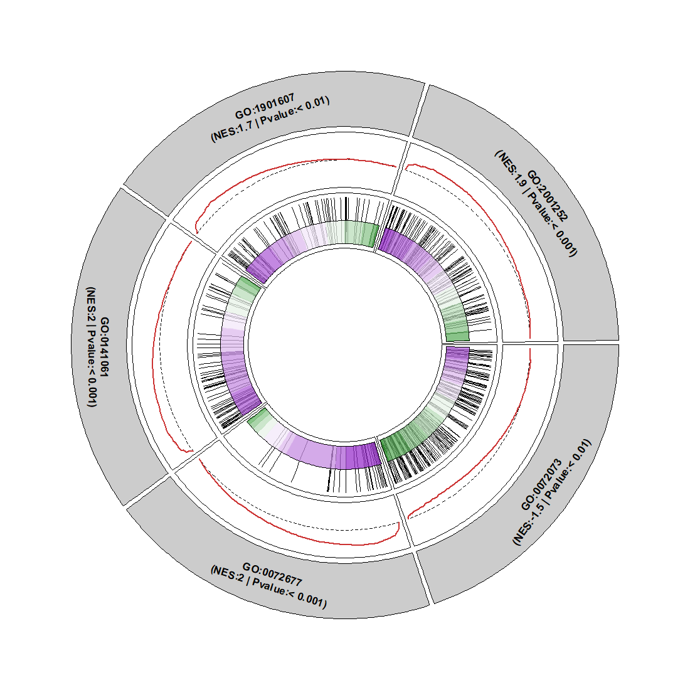
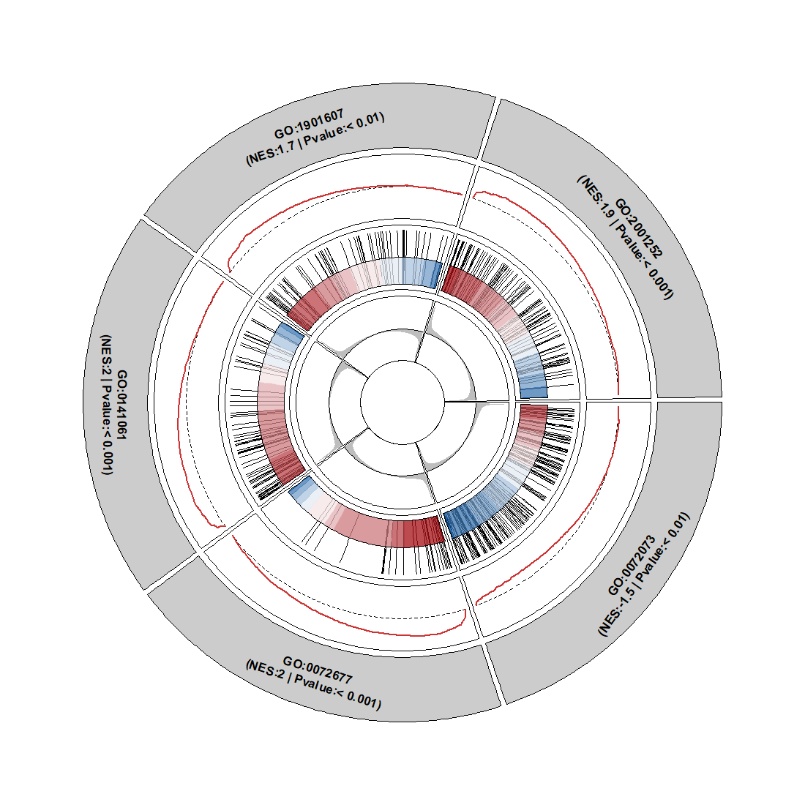
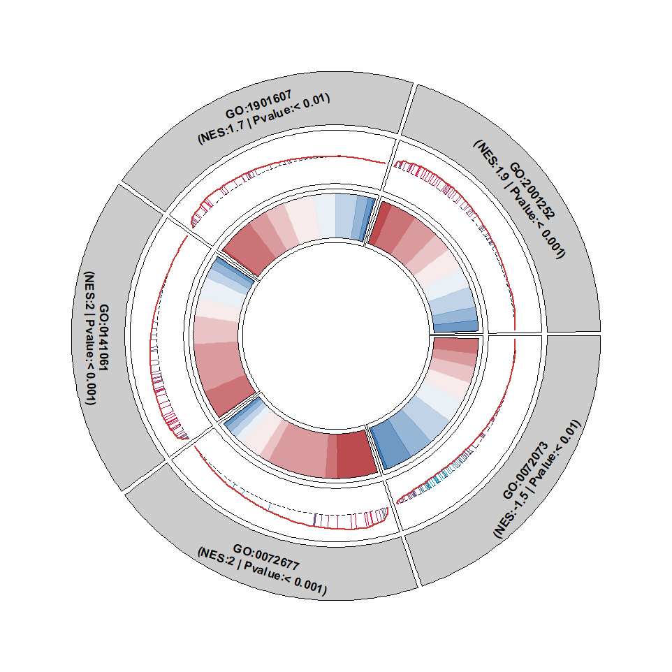
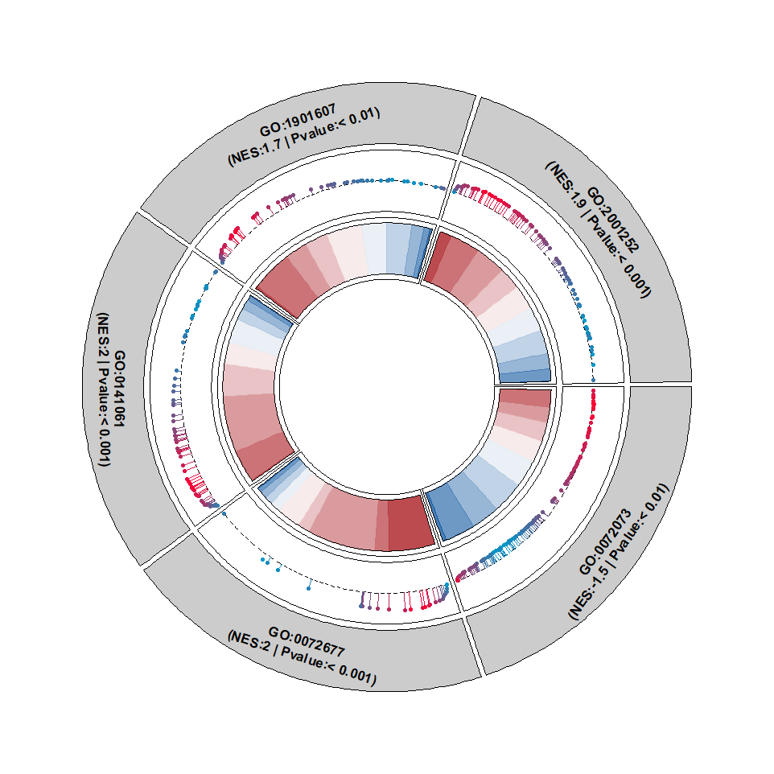
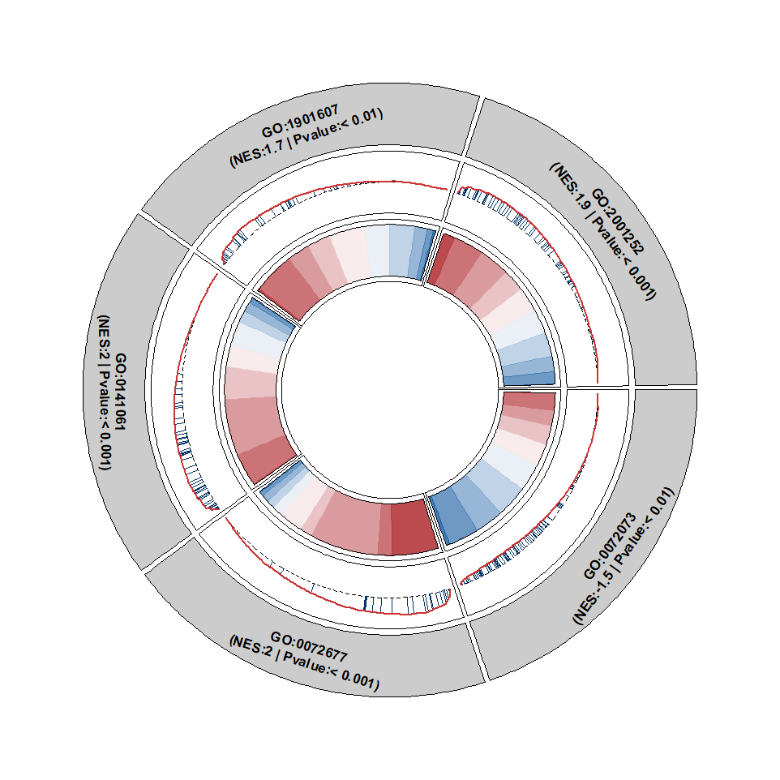
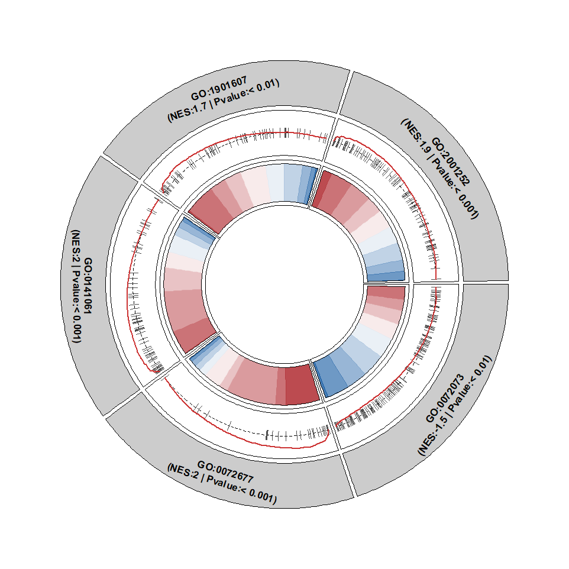
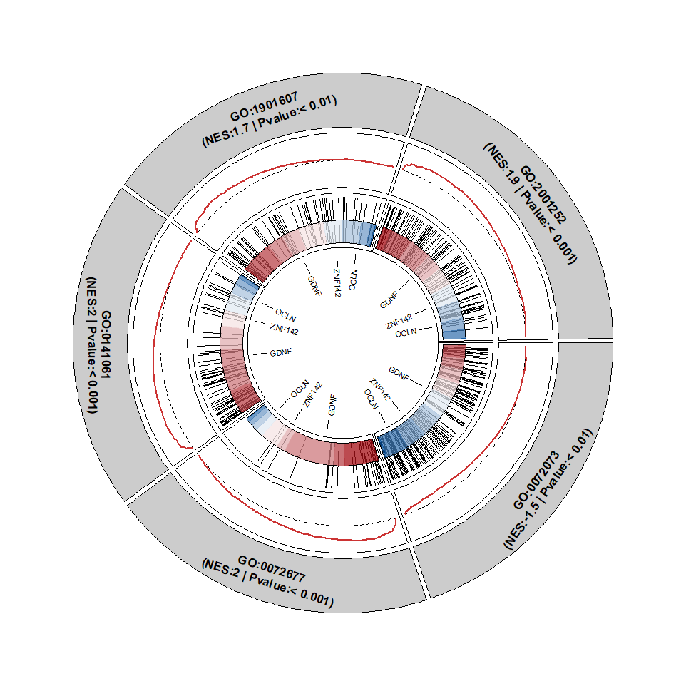

Chapter 9 Circular GSEA plot
There is another way to visualize multiple terms of GSEA plot with circular graphic.
First get a enrichment object:
library(ggplot2)
library(org.Hs.eg.db)
library(clusterProfiler)
library(dplyr)
library(GseaVis)
# load test data
data(geneList, package="DOSE")
gse <- gseGO(geneList = geneList,
ont = "BP",
keyType = "ENTREZID",
OrgDb = org.Hs.eg.db)
gse <- setReadable(x = gse,OrgDb = org.Hs.eg.db,keyType = "ENTREZID")
df_gse <- data.frame(gse)
geneSetID <- sample(df_gse$ID,size = 5)Default plot:
Fit the term label into circular:

Add term description:
No circular for term name:
circGsea(object = gse,
geneSetID = geneSetID,
addDescription = T,
descriptionFacing = "outside",
descripShift = 1.5)
Change background color:

Change heatmap color:

Change curve color:
Add gene rank(this runs slowly):

Merge gene rank segments into curve plot:

Add points:

Change the segment color:

Put the segment at center:

Add gene labels:
mgene <- sample(gse@gene2Symbol,size = 3)
circGsea(object = gse,
geneSetID = geneSetID,
markGene = mgene)